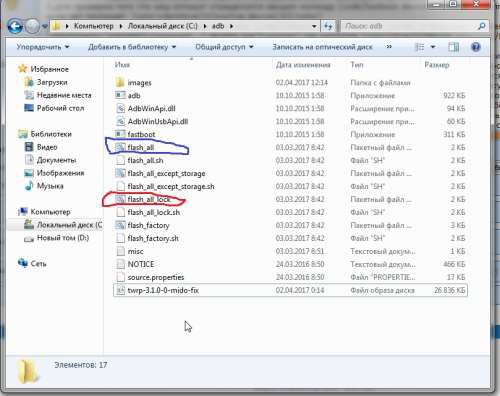
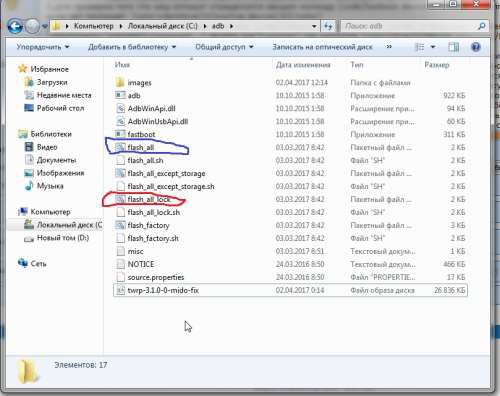

Уменьшено на 39%
Уменьшено на 39%

809 x 641 (143,58 КБ)
Прошивка стока через fastboot
http://4pda.ru/forum/index.php?showtopic=804582&st=1260#entry60081858
Время от времени рекомендую прошивку стока стабильную либо еженедельную в зависимости от ваших предпочтений, для очистки хвостов предыдущих перепрошиваний, либо просто решив вернуться на полный сток с ОТА обновлениями.
Качаем с шапки темы прошивку для fastboot в конце д.б. расширение .tgz распаковываем в нашу папку с adb и жмем синим отмечано чтобы загрузчик остался не тронутым т.е. открытым, красным чтобы вернуть его в стоковое состояние с закрытым загрузчиком
|
 809 x 641 (143,58 КБ) |
начнется прошивка, примерно минуты 3-5, после чего командное окно исчезнет и начнется установка прошивки минут 3-10, в зависимости какую ставите на ММ она дольше, на NUGA чуть быстрее.
PS. При прошивке, путем запуска flash-all.bat все данные удалятся, но можно этого избежать, если открыть с помощью блокнота файл flash-all.bat, убрать в последней команде ключ -w, Сохранить.
P.P.S. сам не проверял.